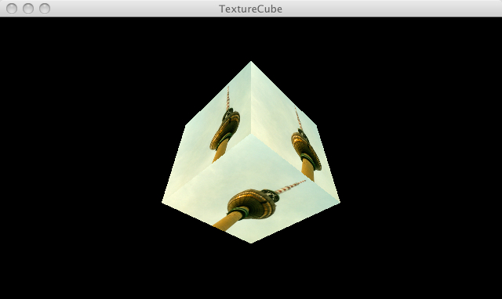

This page tests PJS textures

// Test by Andor Salga
/**
* TexturedCube
* by Dave Bollinger.
*
* Drag mouse to rotate cube. Demonstrates use of u/v coords in
* vertex() and effect on texture(). The textures get distorted using
* the P3D renderer as you can see, but they look great using OPENGL.
*/
/* @pjs preload="berlin.jpg" */
PImage tex;
float rotx = PI/4;
float roty = PI/4;
void setup()
{
size(640, 360, P3D);
tex = loadImage("berlin.jpg");
textureMode(NORMALIZED);
fill(255);
stroke(color(44,48,32));
}
void draw()
{
background(0);
noStroke();
translate(width/2.0, height/2.0, -100);
rotateX(rotx);
rotateY(roty);
scale(90);
TexturedCube(tex);
}
void TexturedCube(PImage tex) {
beginShape(QUADS);
texture(tex);
// Given one texture and six faces, we can easily set up the uv coordinates
// such that four of the faces tile "perfectly" along either u or v, but the other
// two faces cannot be so aligned. This code tiles "along" u, "around" the X/Z faces
// and fudges the Y faces - the Y faces are arbitrarily aligned such that a
// rotation along the X axis will put the "top" of either texture at the "top"
// of the screen, but is not otherwised aligned with the X/Z faces. (This
// just affects what type of symmetry is required if you need seamless
// tiling all the way around the cube)
// +Z "front" face
vertex(-1, -1, 1, 0, 0);
vertex( 1, -1, 1, 1, 0);
vertex( 1, 1, 1, 1, 1);
vertex(-1, 1, 1, 0, 1);
// -Z "back" face
vertex( 1, -1, -1, 0, 0);
vertex(-1, -1, -1, 1, 0);
vertex(-1, 1, -1, 1, 1);
vertex( 1, 1, -1, 0, 1);
// +Y "bottom" face
vertex(-1, 1, 1, 0, 0);
vertex( 1, 1, 1, 1, 0);
vertex( 1, 1, -1, 1, 1);
vertex(-1, 1, -1, 0, 1);
// -Y "top" face
vertex(-1, -1, -1, 0, 0);
vertex( 1, -1, -1, 1, 0);
vertex( 1, -1, 1, 1, 1);
vertex(-1, -1, 1, 0, 1);
// +X "right" face
vertex( 1, -1, 1, 0, 0);
vertex( 1, -1, -1, 1, 0);
vertex( 1, 1, -1, 1, 1);
vertex( 1, 1, 1, 0, 1);
// -X "left" face
vertex(-1, -1, -1, 0, 0);
vertex(-1, -1, 1, 1, 0);
vertex(-1, 1, 1, 1, 1);
vertex(-1, 1, -1, 0, 1);
endShape();
}
void mouseDragged() {
float rate = 0.01;
rotx += (pmouseY-mouseY) * rate;
roty += (mouseX-pmouseX) * rate;
}